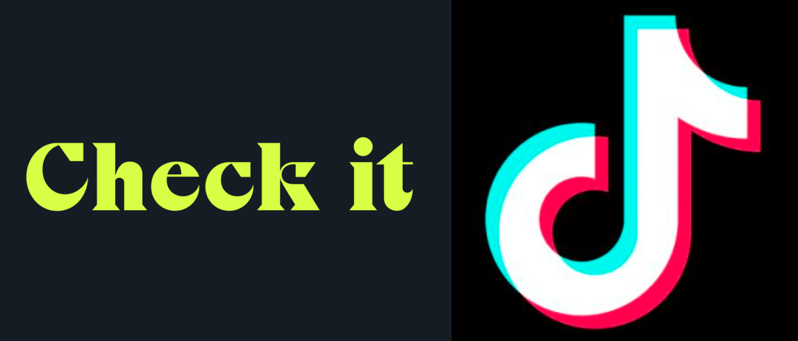
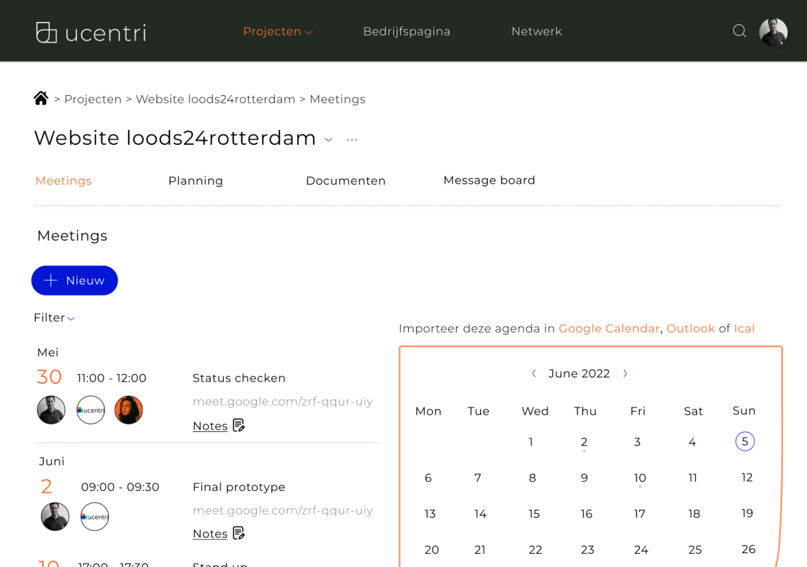

Misinformatie op TikTok
Een feature 'Check it' in een social media app om beter zicht te hebben op wat echt of neppe content is. Het grootschalige onderzoek is gebaseerd op tieners en het gebruik van social media.
UX
Carbon footprint feature - ING
Een feature in de ING app waar er inzicht word gegeven in de gebruikers C02 uitstoot.
UX
